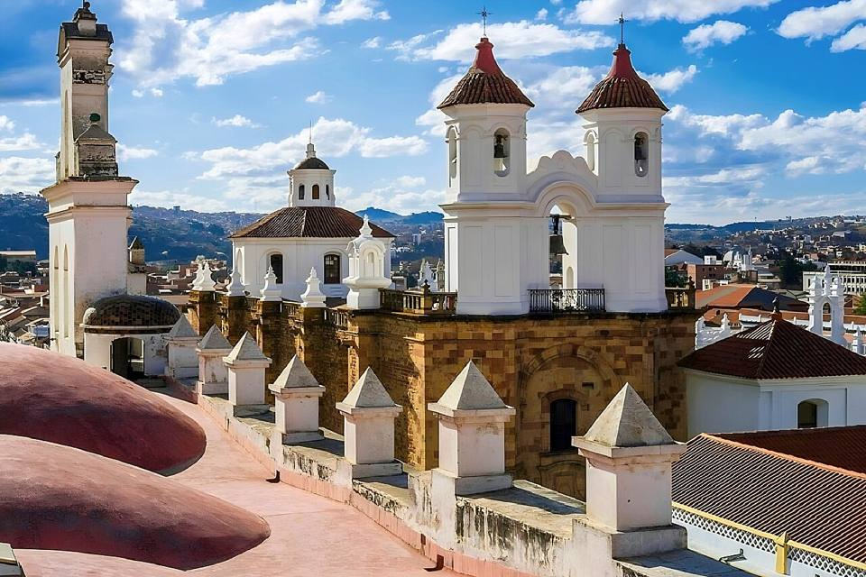
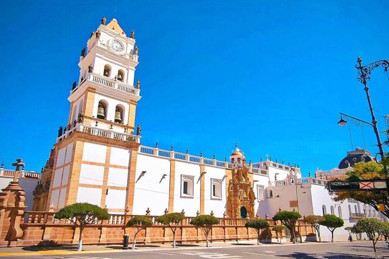
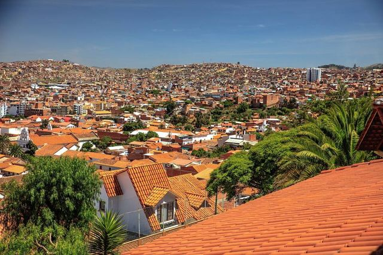
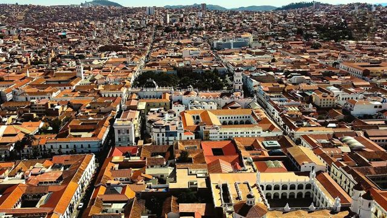
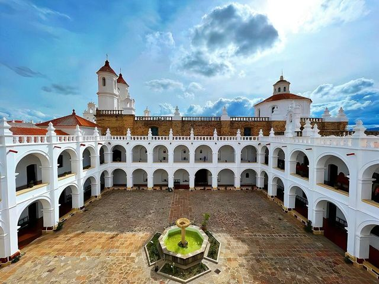
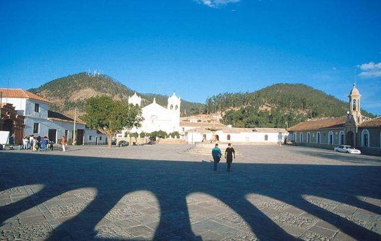
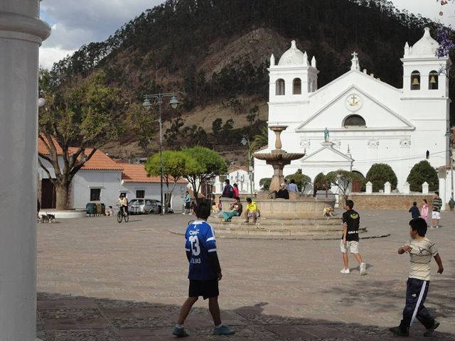

Sucre
Département de Chuquisaca · Villes

Sucre est la plus belle ville de Bolivie : façades blanches, toits de tuiles, cloîtres et places ombragées, au cœur d'une vallée au climat doux. C'est là que l'indépendance a été proclamée. On y mange bien, on y flâne, on monte au mirador de la Recoleta et on découvre un mur couvert de milliers d'empreintes de dinosaures. Le lieu idéal pour se poser quelques jours.
À faire
- Mirador de la Recoleta au coucher du soleil
- Casa de la Libertad (indépendance)
- Parque Cretácico : mur de 5 000 empreintes de dinosaures (Cal Orck'o)
- Marché central (jus de fruits, salteñas)
- Toits du couvent San Felipe Neri
À goûter
- Chorizo chuquisaqueñoSaucisse de porc parfumée de Sucre, grillée et servie dans un petit pain ou avec des pommes de terre.
- MondongoRagoût de porc au piment rouge, avec mote, typique de Sucre lors des fêtes.
- Chocolats de SucreSucre est la capitale du chocolat bolivien (Para Ti, Taboada) : tablettes au cacao d'Amazonie à rapporter.
- SalteñaLe chausson bolivien : pâte légèrement sucrée, farce juteuse de viande, pomme de terre et olives. Se mange le matin, sans en faire couler le jus !
À découvrir ici
- UNESCO Ville historique de Sucre
- Fêtes · UNESCO Vierge de GuadalupeLa patronne de Sucre, fêtée début septembre avec une grande entrée folklorique dans les rues du centre historique.
Comment aller à Sucre
Cochabamba Avion · 35 min de vol
Vols BoA, aéroport d'Alcantarí.
Santa Cruz Avion · 45 min de vol
Vols BoA.
La Paz Avion · 55 min de vol
Vols BoA.
Tarabuco Route (bus, voiture) · 1 h 30
Bus touristiques le dimanche matin, ou minibus.
Maragua Tour en 4x4 ou excursion · 2 h 30 en 4x4 ou 1-3 jours à pied
Trek guidé ou 4x4 depuis Sucre.
Zudáñez Route (bus, voiture) · 2 à 3 h
Bus depuis Sucre par Tarabuco.
Potosí Route (bus, voiture) · 3 h
Bus ou taxis partagés (plus rapides) depuis la Terminal de Potosí.
Candelaria Route (bus, voiture) · environ 3 h
Par Tarabuco, en bus puis transport local, ou avec une agence de Sucre.
Aiquile Route (bus, voiture) · 5 à 6 h
Bus Cochabamba – Sucre qui passent par Aiquile : demandez à monter ou à descendre.
Cochabamba Route (bus, voiture) · 9 à 11 h (de nuit)
Bus de nuit depuis la Terminal de Cochabamba.
Long et sinueux : l'avion (35 min) fait gagner une journée.
Santa Cruz Route (bus, voiture) · 12 à 15 h (de nuit)
Bus de nuit.
Photos de Sucre



.jpg){kind=link}








Autres lieux de la région
 PotosíL'ancienne ville la plus riche du monde grâce à l'argent du Cerro Rico. Classée UNESCO.
PotosíL'ancienne ville la plus riche du monde grâce à l'argent du Cerro Rico. Classée UNESCO. Casa Nacional de Moneda (Potosí)La Monnaie royale où l'argent du Cerro Rico devenait pièces, aujourd'hui le grand musée de Bolivie.
Casa Nacional de Moneda (Potosí)La Monnaie royale où l'argent du Cerro Rico devenait pièces, aujourd'hui le grand musée de Bolivie. Ojo del Inca (Tarapaya)Une lagune d'eau chaude parfaitement ronde, à 30 minutes de Potosí.
Ojo del Inca (Tarapaya)Une lagune d'eau chaude parfaitement ronde, à 30 minutes de Potosí. TarabucoGrand marché du dimanche des communautés yampara, textiles remarquables.
TarabucoGrand marché du dimanche des communautés yampara, textiles remarquables.- CandelariaVillage yampara au-delà de Tarabuco : ancienne hacienda, tissages et tourisme rural.
- ZudáñezPetite ville de vallée liée aux guerres d'indépendance, à l'est de Sucre.
 Cratère de MaraguaSynclinal géant aux couleurs rouges et violettes, villages de tisserands jalq'a.
Cratère de MaraguaSynclinal géant aux couleurs rouges et violettes, villages de tisserands jalq'a.